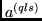

Next: The subroutine RWLS
Up: SAI_SQLS1
Previous: The subroutine NINE
This subroutine determines the value of the RCFP:
for p -, d -, and f -
shells (see (39) in P2 [4]).
The routine uses the table of reduced matrix elements of the 
tensor operator from P4 [6]).
The subroutine has the following arguments:
- L is the orbital quantum number l.
- IT is the state number of the bra function
(see Tables 1, 2).
- LQ is the quasispin Q for the bra function multiplied by two.
- LL is the total angular momentum L
for the bra function multiplied by two.
- LS is the total angular momentum S
for the bra function multiplied by two.
- ITS is the state number of the ket function.
- LQS is the quasispin Q for the ket function multiplied by two.
- LLS is the total angular momentum L for the ket function multiplied by
two.
- LSS is the total angular momentum S for the ket function multiplied by
two.
- S is the value of the reduced matrix element (34) which is
returned by the subroutine.
Next: The subroutine RWLS
Up: SAI_SQLS1
Previous: The subroutine NINE
2001-12-07